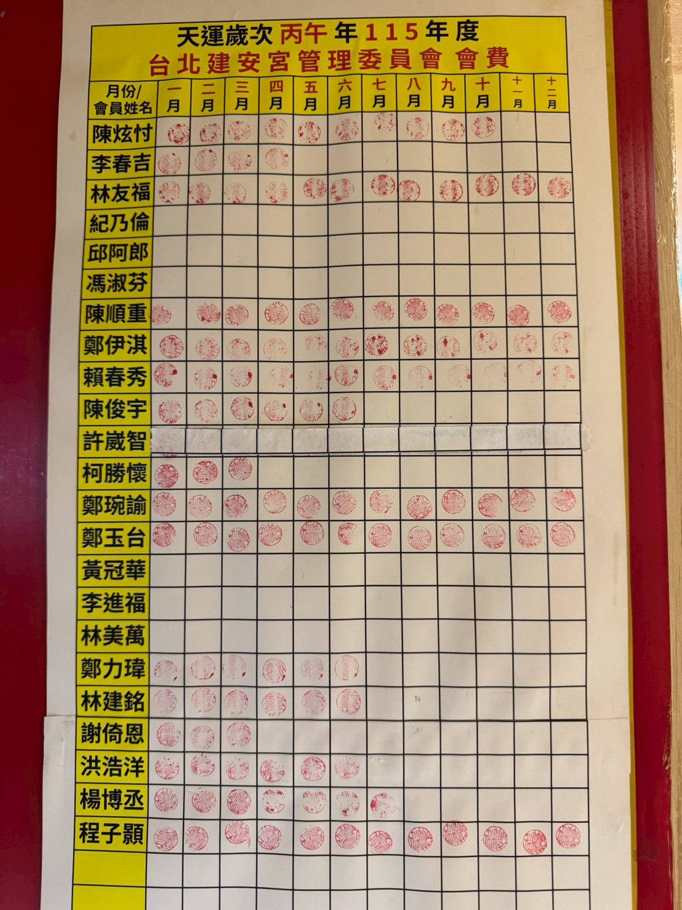

台北建安宮管理委員會由信眾共同組成，
負責本宮日常運作、年度祭典、進香遶境等諸事。
委員們無私奉獻，是建安宮香火相承的中堅力量。
天運歲次 丙午 年 ・ 中華民國 115 年度
台北建安宮 管理委員會
※ 委員名單依本宮公告為準，如有更動將陸續更新
委員會費每月 500 元，
以印章紀錄於本宮委員表上。

本宮為非營利宗教組織，由信眾共同護持。
歡迎萬華地區及各方信眾加入會員、參與每月會務、共襄盛舉。
會費每月新台幣 500 元，所有經費皆用於本宮日常運作、祭典法會與公益慈善。
每月會議、年度祭典、進香遶境優先報名
會員姓名納入年度祈福法會疏文，蒙神尊護佑
共同維護本宮運作、傳承媽祖信仰文化
※ 申請流程：聯絡本宮 → 委員引介 → 委員會審核 → 完成入會